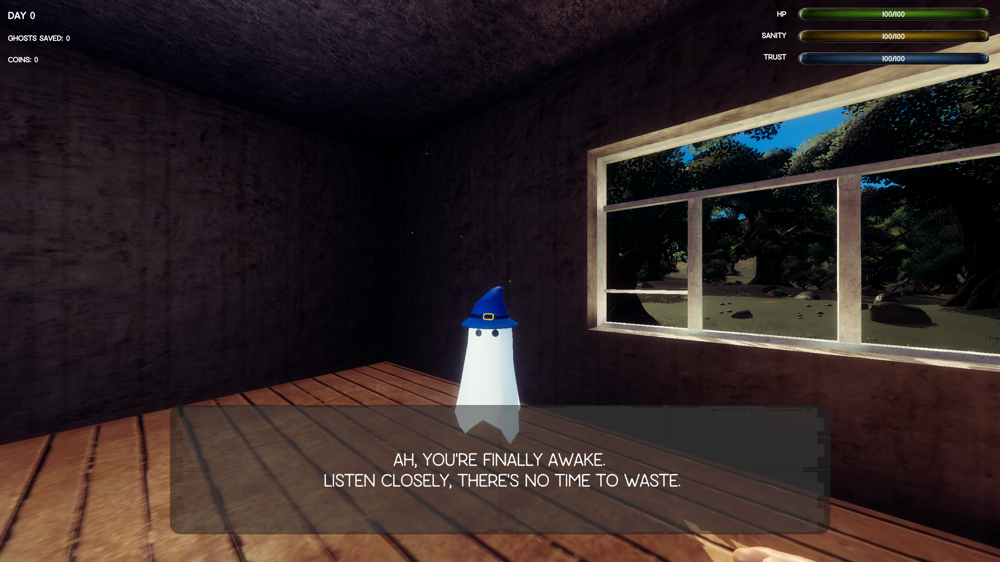
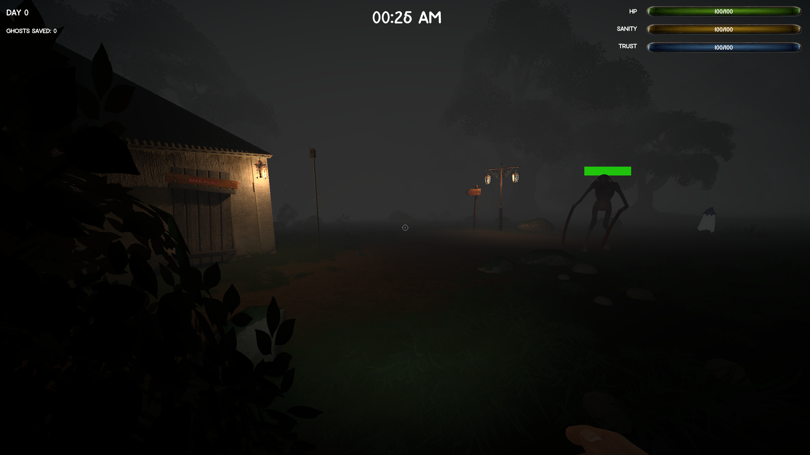
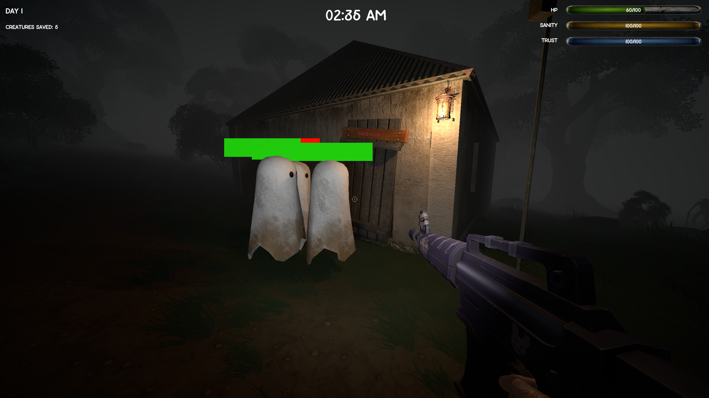

Works
Wild Hunt
Portfolio
About
This project was developed as a way for me to learn how to use Unity and C#. It was created over the course of 5 weeks independently. This is also the first time I explored the horror, as well as the first-person shooter genre. It was a fun project to design and develop.
The game starts inside a cabin, with an NPC explaining the rules of the game: you have to go out at night and save little ghosts that are wondering around. However, they are not alone. There are monsters lurking in the dark, waiting to catch you. You have to hunt them down while protecting the ghosts. You have a flashlight and a gun to help you on your quest. The game is won by saving 20 ghosts withing 3 nights.
The game consists of two phases: during the night, when you go hunting for ghosts, and during the day, when you're safely inside the cabin. The tutorial NPC will let you in on a secret on your second night: you can get better weapons and other upgrades by trading the lives you have saved. But you have to be sneaky about it. If other ghosts see you when you murder one of them, they will lose trust in you, and might leave the cabin. You also lose sanity when you kill them, meaning the monsters lurking outside get stronger.
You need to make your choice. Live with a peace of mind, knowing you did not take the lives you saved at the cost of upgrades, or sell your soul to the devil to make your job ever so slightly easier. keep in mind, though, the monsters do get tougher as days pass.
Gameplay
What I Did
I designed the game concept and developed the game mechanics within the short time given. Paying attention to the player feedback was one of the project's main focuses, in order to make the gameplay as clear as possible.
Another thing I focused on was achieving the right atmosphere for the game. I had to work out the lighting, the sound and visual effects to best suit the horror theme. I dressed the map I used in a way that enabled the players to go exploring quite far, while still being able to find their way back to the cabin. I achieved this by carving a path into the land, and placing landmarks and lanterns along the way.
My design choices lead to a spooky atmosphere during the night, and a cozy, safe feeling during the day, which was exactly what I wanted to achieve.
 
